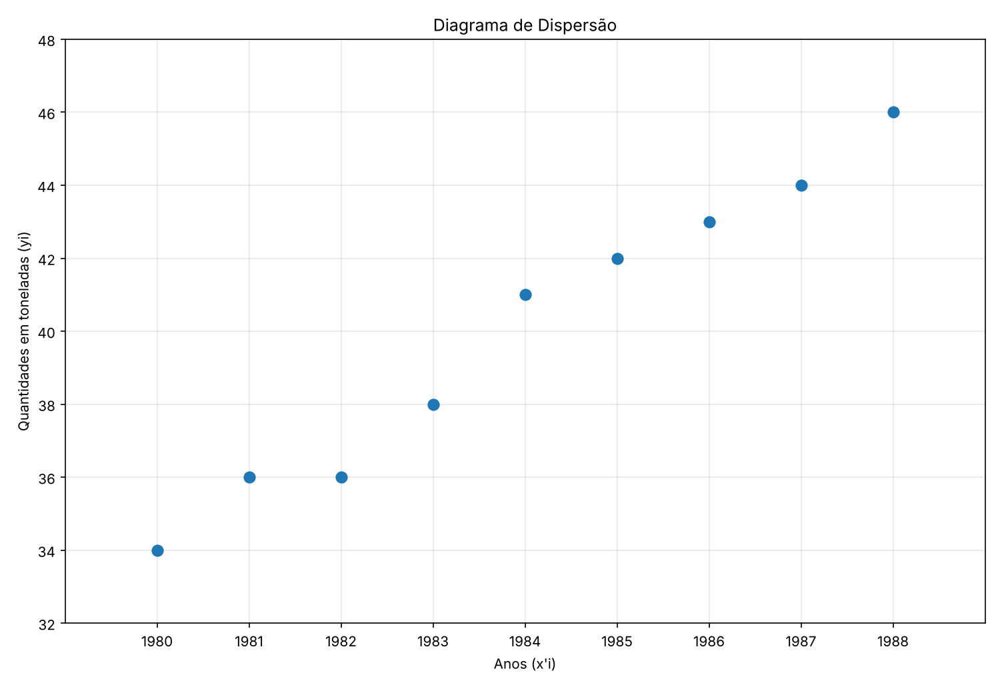

Aqui vamos descobrir se duas variáveis andam juntas e usar essa relação para fazer previsões.
2. A tabela abaixo apresenta a produção de uma indústria:
| Anos (x'i) | 1980 | 1981 | 1982 | 1983 | 1984 | 1985 | 1986 | 1987 | 1988 |
| Quantidades (t) (yi) | 34 | 36 | 36 | 38 | 41 | 42 | 43 | 44 | 46 |
Determine:
Os pontos sobem da esquerda para a direita, o que indica que a produção cresce com os anos.

1 passo - Montar a tabela
| i | xi | yi | xiyi | xi² | yi² |
|---|---|---|---|---|---|
| 1 | 1980 | 34 | 67320 | 3920400 | 1156 |
| 2 | 1981 | 36 | 71316 | 3924361 | 1296 |
| 3 | 1982 | 36 | 71352 | 3928324 | 1296 |
| 4 | 1983 | 38 | 75354 | 3932289 | 1444 |
| 5 | 1984 | 41 | 81344 | 3936256 | 1681 |
| 6 | 1985 | 42 | 83370 | 3940225 | 1764 |
| 7 | 1986 | 43 | 85398 | 3944196 | 1849 |
| 8 | 1987 | 44 | 87428 | 3948169 | 1936 |
| 9 | 1988 | 46 | 91448 | 3952144 | 2116 |
| Total | 17856 | 360 | 714330 | 35426364 | 14538 |
2 passo - Aplicar a fórmula
Fórmula:
r = (n · Σ(xiyi) − Σxi · Σyi) / √((n · Σxi2 − (Σxi)2) · (n · Σyi2 − (Σyi)2))
Dados da tabela: n = 9, Σxi = 17856, Σyi = 360, Σxiyi = 714330, Σxi2 = 35426364 e Σyi2 = 14538
r = (9 · 714330 − 17856 · 360) / √((9 · 35426364 − (17856)2) · (9 · 14538 − (360)2))
r = (6428970 − 6428160) / √((318837276 − 318836736) · (130842 − 129600))
r = 810 / √(540 · 1242)
r = 810 / √670680
r = 810 / 818,95
r ≈ 0,9891
Como r está muito perto de 1, existe uma correlação positiva muito forte entre o ano e a produção.
Fórmula:
ŷ(x) = ax + b
O a (coeficiente angular) diz quanto y muda quando x aumenta 1. O b (coeficiente linear) é o valor de ŷ quando x = 0.
Cálculo do a:
a = (n · Σ(xiyi) − Σxi · Σyi) / (n · Σxi2 − (Σxi)2)
a = (9 · 714330 − 17856 · 360) / (9 · 35426364 − (17856)2)
a = (6428970 − 6428160) / (318837276 − 318836736)
a = 810 / 540
a = 1,5
Cálculo do b:
b = Σyi/n − a · Σxi/n
b = 360/9 − 1,5 · 17856/9
b = 40 − 1,5 · 1984
b = 40 − 2976
b = −2936
ŷ(x) = 1,5x − 2936
O a = 1,5 significa que, a cada ano, a produção aumenta em média 1,5 tonelada. O b é um número grande e negativo porque x = 0 seria o ano 0, muito longe dos dados, e não tem significado prático.
Como não simplificamos, usamos o ano cheio (x = 1979):
ŷ(1979) = 1,5 · 1979 − 2936
ŷ(1979) = 2968,5 − 2936
ŷ(1979) = 32,5
Como 1979 está fora do intervalo dos dados (1980 a 1988), essa estimativa é uma extrapolação.
Números grandes como 3920400 são fáceis de errar. Para evitar, podemos usar uma variável auxiliar, subtraindo um ano de referência de todos os anos: x = x' − 1984.
Assim os valores de x ficam −4, −3, ..., 0, ..., 3, 4, e as contas ficam bem menores. O resultado de r e o valor de a não mudam; só o b muda:
ŷ(x) = 1,5x + 40, com x = ano − 1984
Para 1979, x = 1979 − 1984 = −5, então ŷ = 1,5 · (−5) + 40 = 32,5, o mesmo valor de antes.
Lembre: se a reta foi montada com x simplificado, o ano também precisa ser simplificado antes de substituir.